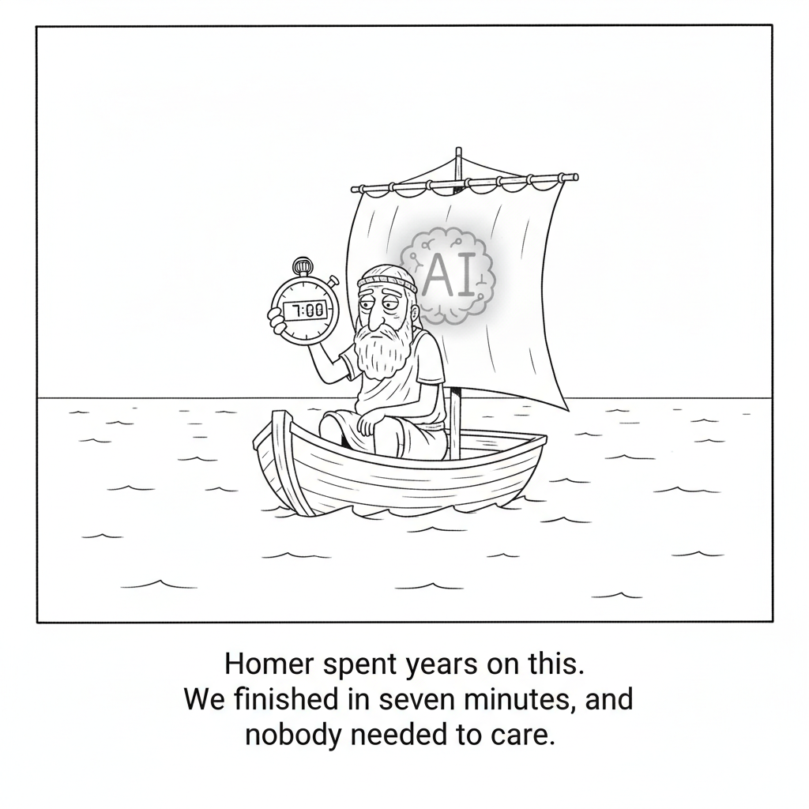

The U.S.-led Pax Silica and China’s World AI Cooperation Organization are pulling countries into rival AI blocs, and experts say the window to choose freely between them may be narrowing. Kazakhstan shows the bind. Three weeks after its AI minister visited Washington in June to join the U.S. group working on AI supply chains, he went to Shanghai to make the country a founding member of China’s organization, which started with 29 members including Pakistan and Russia.
Kazakhstan has critical minerals and cheap electricity, an investment deal worth up to $10 billion involving Nvidia for a “data center valley,” and a record $2.8 billion in Chinese direct investment in 2025. The State Department says countries “can’t be trusted partners” in Pax Silica while engaging in initiatives that advance a competing vision, while Beijing says AI “should not be owned by major countries.” “Everyone is hedging,” said former Kazakh diplomat Dana Masalimova. Indonesia has joined China’s group, Singapore says it is considering it, and Saudi Arabia’s Humain built a platform on a Chinese open model while buying Nvidia chips.
Apollo’s Torsten Slok studied the S&P 493, the S&P 500 minus Alphabet, Amazon, Apple, Meta, Microsoft, Nvidia and Tesla, and found profit margins and revenue per worker appear flat, with no evidence that AI is improving productivity. “AI may be a great calculator, but in business, intelligence is mostly judgment,” he wrote. TechCrunch notes that Apollo used to own TechCrunch.
Willison made a small tool that cuts an image horizontally or vertically and slides the two sides together, which removes a section from the middle. He wanted it to redact an irrelevant prompt from long transcripts he builds by stitching iPhone screenshots together.
AI Video · Entertainment

“Homer spent years on this. We finished in seven minutes, and nobody needed to care.”
Three months after Elon Musk promised a full-length, “historically accurate” movie version of The Odyssey, Grok released seven minutes it calls Episode 1 of an Odyssey series, made with Grok Imagine, Wonder Studios, and director Dev Walker. TechCrunch’s Anthony Ha found it less ugly than he expected but “airless,” with stilted lines and no sense of artistry or human interest, and says a full movie’s worth is hard to imagine.
AI companies are consulting faith leaders, and Anthropic said in May it had met scholars, clergy, and ethicists from more than 15 religious and cross-cultural groups. University of Michigan anthropologist Webb Keane warns that treating religion as a rule book favors scriptural, largely Abrahamic traditions and can distort faiths that do not see themselves mainly as ethical systems. Anthropic says it wants Claude to draw on religious, secular, and political views with equal depth.
Chesky said on the Invest Like The Best podcast that people who only manage people, with one-on-ones and meetings, will have no value, and that every leader will need to be a “hybrid people manager” who stays close to the product. He named former Apple design chief Jony Ive as a model, and said rigid workers who will not evolve will not make the shift either.
Scramble
Unscramble each word. The red letters, in order, spell a bonus word.
YSSODEY
Grok’s AI-made Homer epic
NGHDGIE
What “everyone” is doing between the two AI blocs
ONIGILER
What tech leaders consult to teach AI right from wrong
SNAMGARE
Chesky says the ones who only manage people won’t survive
Bonus
Red letters in order, reshuffled: what data centers strain (4)
Apollo’s chief economist found profit margins and revenue per worker flat across the S&P 493, the index minus seven tech giants, and concluded AI has delivered “zero financial payoff to corporate America outside of tech.” Meanwhile Kazakhstan flew its AI minister to Washington in June and to Shanghai three weeks later, joining both rival AI blocs. Put those next to a seven-minute AI movie that a TechCrunch editor called “airless” and a push to teach AI morality from religion, and today’s stories share one question: what does AI still lack when intelligence gets cheap? The answer in most of them is judgment.
▶Listen to the Digest~4 min
Today’s Headlines
Power and Geopolitics
Rival AI Blocs – The U.S. group Pax Silica and China’s World AI Cooperation Organization are asking countries to choose. Kazakhstan joined the U.S. supply-chain effort in June, then signed on as one of 29 founding members of China’s group three weeks later. It has an Nvidia-linked deal worth up to $10 billion for a data center valley and a record $2.8 billion of Chinese direct investment in 2025. The State Department says a country cannot be a trusted Pax Silica partner while backing a competing vision, which is the clearest sign the hedging window is closing. Brookings’ Kyle Chan explains why the swing countries have leverage: Beijing needs to recruit them, while Washington already has allies. AidData counts Chinese AI-related grants or loans in at least 77 low- and middle-income countries.
Who Gets Squeezed – The same report points out that the U.K. and Germany have large economies but no frontier models of their own, so, in the words of Carnegie researchers, their access to advanced AI “depends on the whims of policymakers in Washington and Beijing.” France is trying a third route with Mistral, whose new model reportedly outperforms some advanced Chinese models. CSIS’s Aalok Mehta says nearly every country is thinking about AI sovereignty, even though perhaps only the U.S. and China can build the very largest models.
Payoff and Work
“Zero Financial Payoff” – Torsten Slok excludes Alphabet, Amazon, Apple, Meta, Microsoft, Nvidia, and Tesla to look at the other 493 companies in the S&P 500. In that group he finds flat profit margins and flat revenue per worker, and no evidence of AI-driven productivity. His explanation is the memorable part: AI “does not understand accountability, trust, culture, unwritten rules, ethical trade-offs or fairness,” all of which drive revenue. Note that TechCrunch discloses Apollo used to own it, and that Slok is arguing a thesis, not publishing a controlled study.
Chesky’s Two Casualties – Brian Chesky’s prescription is that pure people managers, who only run one-on-ones and meetings, will have no value, and that leaders must become “manager ICs” who understand the product’s context. He cites Jony Ive as the right balance of design and leadership. Fortune frames it alongside Jensen Huang’s line that you will lose your job to someone who uses AI. This piece was first published May 7 and re-run Oct 25, so treat it as a standing view, not fresh news.
Culture, Values, and Small Tools
Grok’s Odyssey – Musk promised a full-length, “historically accurate” film three months ago and delivered seven minutes, billed as Episode 1 and made with Wonder Studios and director Dev Walker. Anthony Ha’s verdict is that single shots pass as real, but the whole feels “airless,” and he was checking how much time was left before the clip was halfway through. He contrasts it with Christopher Nolan’s practically shot version, which he says sold out Imax screenings for months.
Religion as a Moral Dataset – Anthropic says it has consulted more than 15 religious and cross-cultural groups, and Notre Dame philosopher Meghan Sullivan, who attended one meeting, found it rigorous. The critique comes from anthropologists: Webb Keane says the rule-book view of religion is tied to scriptural, Abrahamic traditions, and scholar Tomoko Masuzawa notes that categories like Buddhism and Hinduism were not native to those who practiced them. Anthropic’s stated aim is not to align Claude with any one tradition but to draw on religious, secular, and political viewpoints with equal rigor.
Seam Cutter – Simon Willison’s tiny tool slides two halves of an image together after a horizontal or vertical cut, deleting the middle. His example is practical: trimming an irrelevant prompt out of a stitched screenshot transcript. The page is short, so this is a note about a handy utility rather than a finding.
The Throughline
Every story here turns on judgment, and on who supplies it. Slok’s argument is that cheap intelligence does not become profit because “in business, intelligence is mostly judgment,” and the 493 companies he tracked have no margin gains to show for their AI spending. Chesky arrives at the same place from the opposite direction: managers must stay inside the work’s context, because supervising people without understanding the product is no longer worth anything. Both are saying that the scarce input is knowing what is good, not producing more output.
Grok’s Odyssey is that thesis as a demo. Ha says individual shots look convincing, and the sum has no momentum and no reason to care, which is what you would expect when generation is cheap and nobody with taste is the bottleneck. Compare it with Nolan’s film, a shoot spanning six countries with thousands of crew, which Ha says became a box office success. The contrast is not that AI footage is bad. It is that the part that made the film worth watching was a series of human decisions the AI version did not replace.
The religion story shows the labs trying to buy judgment from outside. Anthropic’s meetings with clergy and ethicists are earnest, and the critics’ point is that you cannot extract a neutral “weighted average” of moral views, to use Sam Altman’s phrase, because each tradition’s values come bundled with ritual and relationships. The blocs story is the same question at national scale: whose values and rules come with the chips or the open models you adopt? Kazakhstan’s answer, to take both, is the national version of a company hedging on AI strategy.
The Bigger Picture
AI is becoming infrastructure that countries choose and companies depend on, before it has become reliably profitable for most of them. The AP report shows governments treating AI stacks the way they once treated rail gauges or telecom standards, as a choice that binds you to a partner. At the same time Apollo’s data suggests the average non-tech company has not yet seen the money. Both can be true: strategic importance can run ahead of measurable returns for a long time, and that gap is where hedging, hype, and sovereignty politics thrive.
My read is that the next phase is less about capability and more about where authority sits. Authority over supply chains, over values, over what counts as good output. Be skeptical of any claim that cheap generation settles those questions. Today’s sources, from a failed AI film to an anthropologist’s warning, suggest the hard part was never the generation.
What to Watch
Membership moves between the blocs. Singapore says it is considering China’s organization while Anthropic builds an Asia office there, so its decision will show how far Pax Silica’s “trusted partner” test is enforced.
More S&P 493 data. Slok’s claim rests on flat margins and revenue per worker. Earnings commentary from non-tech firms over the next quarter will either support or contradict it.
Who joins the faith consultations. Anthropic says it hopes to broaden the pool beyond 15 groups. Whether it names the traditions it consults is the transparency test the critics are asking for.
A second Grok episode. Whether the series continues, and whether anyone watches, will show if the Odyssey was a demo or a product.